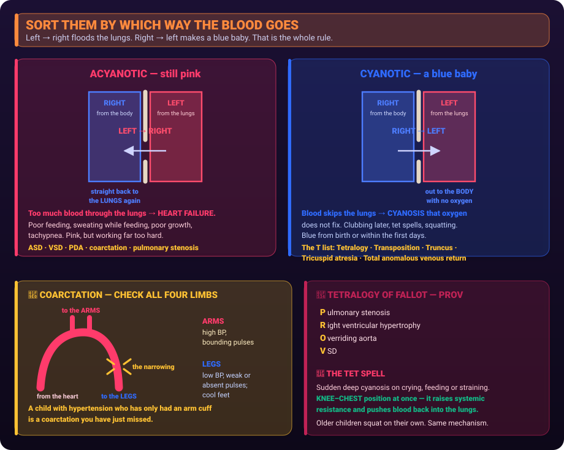

Sort them by which way blood shunts. Left-to-right floods the lungs; right-to-left makes a blue baby.

Ask which way the blood is going through the hole.
Left to right = too much lung blood = heart failure. Right to left = deoxygenated blood to the body = cyanosis.
| Group | Blood goes | Result | Examples |
|---|---|---|---|
| Acyanotic | Left → right | Pulmonary overload, heart failure, poor feeding, sweating, poor growth | ASD, VSD, PDA, coarctation, pulmonary stenosis |
| Cyanotic | Right → left | Cyanosis that oxygen does not fix | Tetralogy of Fallot, transposition, truncus, tricuspid atresia |
The memory hook: cyanotic lesions mostly begin with T or have a “T” sound — Tetralogy, Transposition, Truncus, Tricuspid atresia, Total anomalous pulmonary venous return.
A narrowing of the aorta. The classic finding is a blood pressure difference:
Always compare upper and lower limb pulses and pressures in a child with hypertension. Coarctation is a fixable cause that is missed by only checking an arm.
Sudden deep cyanosis, usually triggered by crying, feeding or straining — anything that drops systemic resistance and sends more blood right-to-left.
Put the infant in the KNEE-CHEST position immediately. Older children squat instinctively - it does the same thing.
Why it works: flexing the hips raises systemic vascular resistance, which pushes blood back through the pulmonary artery to be oxygenated.
Then: calm the child, oxygen, morphine if ordered, IV fluids.
It looks like feeding trouble, not like adult heart failure.
Ankle oedema is an adult sign. In a baby, look at the liver and the weight chart.
Never repeat a dose that was vomited, and never mix digoxin into a bottle of formula - if the feed is not finished, the dose is unknown.
Fever for 5 or more days plus red eyes, strawberry tongue, cracked lips, rash, and swollen red hands and feet that later peel.
It inflames coronary arteries and causes aneurysms, so treatment is IVIG plus aspirin — the one situation where a child is deliberately given aspirin.
After IVIG, live vaccines must be delayed about 11 months - the antibodies block the immune response.